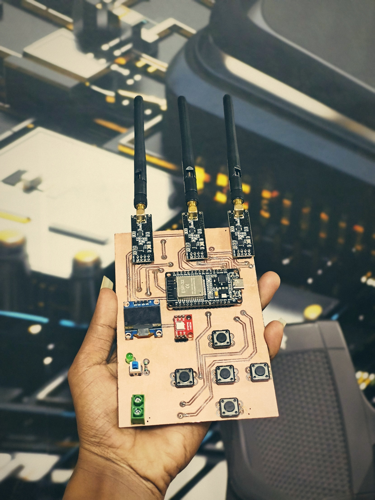

PROJECT 05
ESP32-Based Bluetooth/Wi-Fi Jammer
An ESP32-based embedded hardware prototype exploring wireless communication, RF modules and hardware integration.

Project Overview
This project explores an ESP32-based embedded hardware prototype involving wireless communication concepts and RF module integration. It focuses on hardware development, PCB design and understanding wireless communication systems.
Hardware Components
ESP32 development board, RF modules, antennas, PCB and supporting electronic components.
Project Objective
To gain practical experience in embedded hardware development, wireless communication concepts and electronic circuit integration.
This project is presented for educational study of wireless communication systems. It is not intended for disrupting or interfering with communications.
← Back to Selected Projects